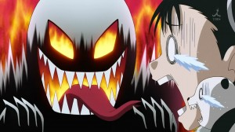
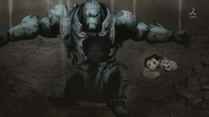

Re;AnimeSan
Re;AnimeSan
Re;AnimeSan

FULLMETAL ALCHEMIST: BROTHERHOOD is the second anime series adaptation of the popular Japanese manga series Fullmetal Alchemist by Hiromu Arakawa. Unlike first Fullmetal Alchemist series which had its own original plotlines, Fullmetal Alchemist: Brotherhood reboots the Elric brothers' story as it appears in the manga. Fans of the first anime series who have not read the manga series may be a little disappointed that Brotherhood is not a sequel, however, there are enough differences in plot to keep things interesting for those familiar with the series. Manga purists should be ecstatic as not only is the original storyline kept intact, but the art is closer to that of the manga as well.
Despite containing many visual and thematic conventions common to the genre (the prodigal youths, violent adversaries, over the top destruction, and giant sweat drops), the storyline contains an enjoyable balance of action, tragedy, humor, and surprisingly mature themes. The Elric brothers and their large supporting cast are generally well thought out with believable motivations. The villains have some dimension to them and are not purely evil or misguided minions as they are in many more mainstream series. This combination of great characterizations, as well as some solid pacing and believable plot points make Fullmetal Alchemist: Brotherhood stand out as a worthy time investment for any anime fan or newcomer with the maturity to handle the more violent aspects and the attention span to understand the complex plot points.
FMA: Brotherhood is probably one of my favorite animes, as I'm sure it holds a special place in many an anime fan's heart. I know it's one of Linny's all time favorites and It's also become one of mine. I had seen the original anime series, the first adaptation, before watching this so it gives me a great chance to compare the two. It's not to say the original run was bad, but ultimately it fails to capture the depth of the story available here in the "truer" adaptation. Where as the original run diverged fairly early on (around the death of one character and the introduction of another) Brotherhood remains mostly true all the way through. It's pretty clear when watching the two which one is more faithful, even if I hadn't already told you. FMA fails to introduce very few new characters throughout it's 51 episode run, instead opting to work with the original cast up to the very end of it's story unlike Brotherhood.
As most anime and manga fans will note it's very rare for an ongoing manga to not introduce new characters periodically, to constantly keep the cast fresh and adventure going. Almost every ongoing manga has a cast shift or new character introduction from time to time as the story progresses. This immediately tells you which of the two anime adaptations is true while the other strays heavily from the source material.
I don't want to say the first adaptation is bad, because it isn't, but upon watching brotherhood it becomes very clear which is the superior version. The manga creator, Hiromu Arakawa, truly shines with her storytelling in this series as Brotherhood has one of the most engaging and well thought stories out there, let alone in the manga and anime industry. I have very few quibbles with the story and the direction it takes and even the end feels almost perfect. If there are any complaints about the story in this series it's that the opening episodes aren't as well done as the original adaptation. In fact, Brotherhood even skips a brief arc that the original adaptation covered while also adding an entirely different story for the first episode lead in. It's not to say the opening episodes are bad, but this is the one area where the first adaptation got it right. If you're only going to watch one I'd say without a doubt watch Brotherhood. But if you have the time and energy, watch the first adaptation and then brotherhood. It's a very interesting experience.
There are just some series that when over you say “this was a great anime.” Fullmetal Alchemist: Brotherhood is that kind of series. There are times when remakes just don’t work (like the remake for the PSX game Wild Arms), but this is a remake that does pretty much everything right and as a total package is a great series. The original Fullmetal Alchemist was a good series that many enjoyed. Of course the ending and subsequent movie rubbed me the wrong way. But, I don’t think anyone can say it was a bad decision to go back and remake the series following the original manga to the finish. The problem for the first Fullmetal Alchemist was that it started back in 2003. For those who didn’t know the manga finished alongside Brotherhood which ended in 2010. That is a lot of material that the original series could never cover. The only options available to Fullmetal Alchemist was doing an original story or stopping and waiting. Regardless of how that decision turned out that left a lot of material untouched and thus more than enough reason to do a remake. Of course if there is one thing I’m glad they remade the series for it was the EdxWinry relationship. The thing that didn’t really even happen in the original series with how it ended. This time it was done right and you are left smiling at the end.
The early episodes had to be tough on some people since it was a lot of familiar stuff. For that reason the early part of the series was just trying to rush itself forward so it could get to the new material and get everyone’s attention. It’s kind of amazing when you think of the new things that could be covered. Xing, “Father”, Briggs, vengeance for Hughes, etc. The homunculi were also extremely different in terms of identity and where they came from. The original series tied their origins to the human transmutation while Brotherhood made them parts of Father that he discarded. A lot of time could be spent going on about the major differences between the series, but the point I’m making here is that there was good reason to make this series and I’m damn glad they did.
It is tough to decide where to start when you are reviewing a massive 64 episode series like Brotherhood. Even more so when Brotherhood did such a good job of fleshing out characters and making a vast world. So many got their moments in the spotlight and you grew to care about them. Of course the Elric brothers were at the core of everything, but the other characters weren’t just background pieces in their tale. But still the best place to start is with these brothers. Edward and Alphonse Elric really went through an amazing journey in the series. The flashbacks give you their background when they were simply children living with their mother and Hohenheim. Of course it all went bad after their father left and mother passed away. Two kids having suffered such a loss delved into alchemy which they had talent (no wonder being children of a human philosopher’s stone) and tried to revive their mother. Of course they didn’t realize what the series would tell them later in that human transmutation can’t work. It was simply an impossibility from the beginning and the cost of that attempt was beyond belief. “Truth” truly did unleash painful punishments on everyone who attempted human transmutation. Alphonse of course paying the highest price in losing his very body. Of course they grew from this point going through painful experiences and unraveling the terrible truth about the existence of their own country Amestris. By the end they had grown physically and mentally and their beliefs grew from simply wanting to reclaim their bodies to wanting to save everyone. You can’t just summarize up the entirety of their journey. They really are tied together with the bonds they made with characters like Ling Yao and developing ones like with Winry.
Of course the story wasn’t simply about these two brothers. At the core of it was Hohenheim, who was so critical to events. They condensed his history into an episode, but one can imagine the kind of life he had to lead. You could really feel sympathy for all the suffering he endured, but by the end he was proud of the life he lead.
It can just continue on with characters like Roy Mustang, Riza Hawkeye, Scar, Greed, Ling Yao, May Chang, etc. In terms of characters Brotherhood gets an A+ since there were so many good ones that anyone who watches the series could have different top 5s. In terms of action a lot of characters outside the main leads got serious battles. Characters from Mustang to Ling had some great fights that are easy to remember even after the series has ended. In terms of serious battles it wasn’t like the leads did all the work at all. The best fights in the series probably would go to Mustang and Wrath. They received so many GAR moments it’s hard to believe. I liked how many of the characters really had their motivations tapped into so we could understand where they were coming from. Mustang had the desire to change the country and protect everyone while the powerful motivation to avenge Hughes also drove him on. Ling and May had the future of their respective clans on the line in the battle to curry favour with the Emperor of Xing and become Emperor or Empress. Everyone had things that were driving them forward and the main characters were just part of the whole thing. It’s not like you didn’t care about the leads since they were well developed, but you could care about other characters and no one would fault you.
 
In terms of the plot the series also delivered. I never would have guessed half the things that the series revealed to us. The very heritage of the main characters, the conspiracy behind the very formation of Amestris and how unbelievably badass King Bradley is. I mean seriously, people should watch the series just to see what that guy can do with a weapon. This series was epic without overstating how huge the plot was. Everything just builds up to the major battles at the end and you just get drawn right into it. It’s not like the journey there was boring either since you get to see characters figuring out the truth, dealing with painful experiences, and really growing as people. The potential of humans is easily shown here both in terms of terrible acts and also great strength. There was a lot of thought put into the story of this series. They really gave some focus to how Amestris had been a country of conquest and thus had different races. Race tension and the Ishbalan Conflict that followed is a key part of the plot for many of the characters. But this series wasn’t just about that one country and made note that Amestris was part of a larger world. The Xing characters played a huge part in the story after all. The series had plenty of serious moments and character deaths. Likable characters died and that helped keep emotions honest since besides the Elric brothers it was impossible to tell who might not make it.
Of course at the core this is also a series of action. The battles were absolutely well done and constantly impressed me. The series didn’t shy away from how ugly war could be with some of the action between soldiers. Of course the highlights were fights being major characters and the abilities of the Homunculi and Alchemists made it pretty crazy. As stated before the battles Wrath took part were all epic. There are just some characters so strong that you have to be amazed when they are on the screen. If people just want to see good action this series is well worth seeing. There was a lot more to the series than just action, but that aspect was strong.
 >
One thing I think Brotherhood did well at was atmosphere. When things got really serious I completely got absorbed in the story and what was going on. A big part of that was the music which was top notch for the series. I didn’t have a complaint about any of the OP/ED combinations that this 64 episode series gave us. Considering they used quite a few over the course of the series that’s a nice accomplishment. Will also give them credit that past OP/ED weren’t simply left aside, but sometimes used for certain scenes. For those moments I thought they were a nice touch. Within the episodes the music was also great from action scenes (like the song leading up to Scar vs Kimblee on the train) to the emotional scenes (like Al refusing to leave Hawkeye when confronted by Lust). The series just found a way to keep me interested and drawn in, in part thanks to the music. No surprise that the series has some great OSTs that people should also check out. The voices all seemed to fit just fine by me. I know a couple changes were made between series, but by the end those were the voices I attached to each character in my mind. Probably the elite voice was Kimblee who was just an entertaining character in his own way.
Visually the series remained strong overall. It certainly needed a high level of quality for some of the battles and alchemy being shown off. I mean we have fire, swords, rock manipulation, shadow attacks, hand to hand combat, guns, tanks, etc. Everything was pretty smooth though the effects used weren’t really friendly to screenshots. With the almost electric nature of alchemy it’s much better to watch in motion rather than stopping at individual moments. There was a lot of different locals from Central, Briggs to the North, the East, and of course the Elric’s hometown. They did a good job showing the various locales of Amestris, a country that absorbed many of its neighbors to reach its current state.
In the end Fullmetal Alchemist: Brotherhood was just an outstanding series. It lived up to its name ‘Brotherhood’ in terms of the obvious Elric brothers, but also the bonds between the various characters. No one made it to the end of that series alive without help. Simply put, Brotherhood was just a great series. Everything that you’d want from a series from sound to story came together for an amazing ride. If you want a series that will amaze you with action and make you care about the characters this is it. It concludes well and gives you a good picture of what happens to most characters. I have to give this series an A+, because it did so many things well from start to finish.